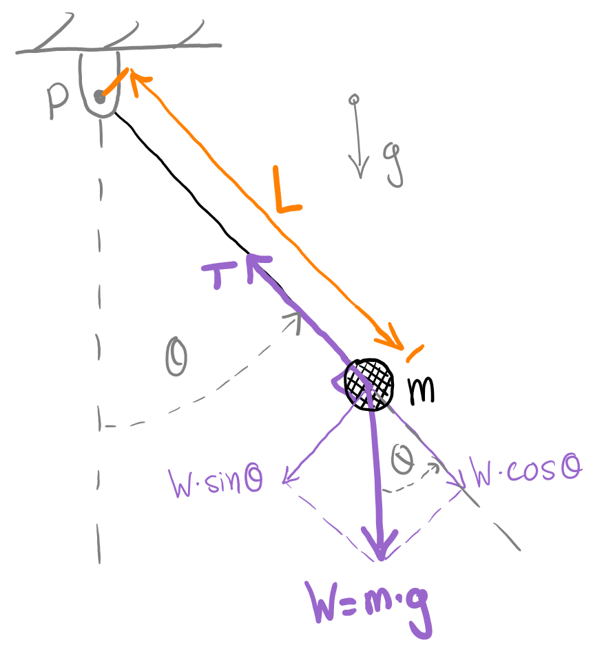
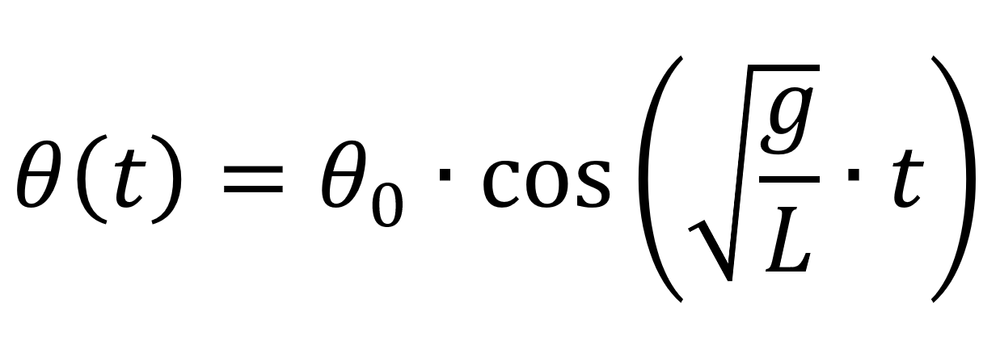
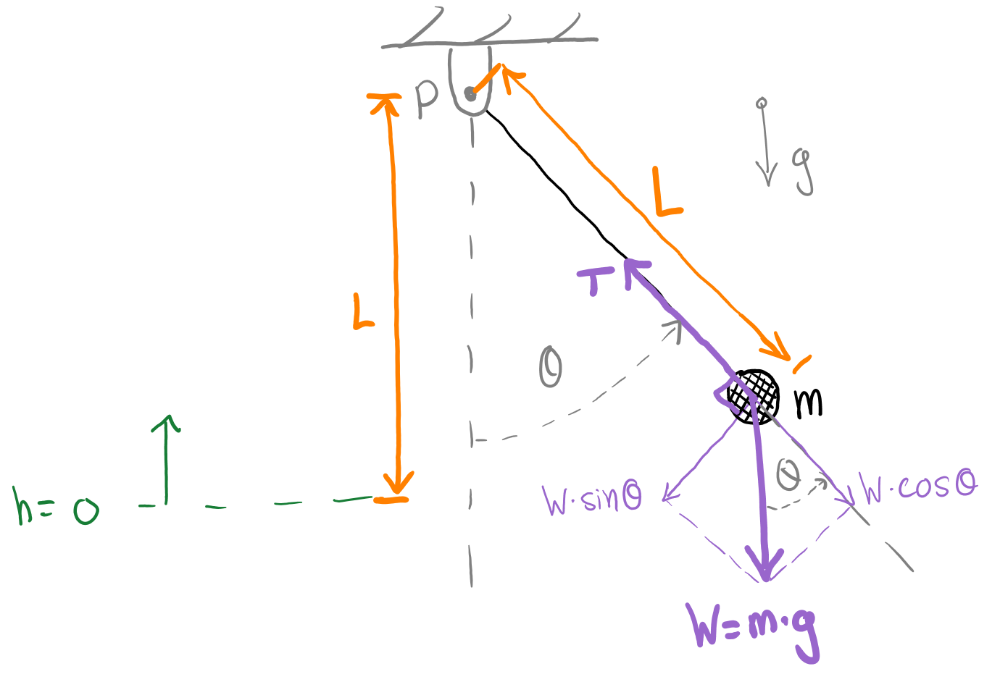
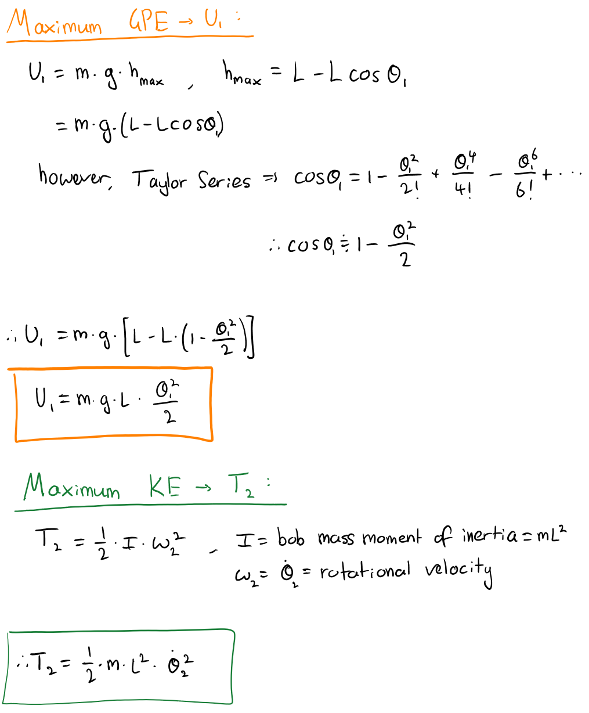
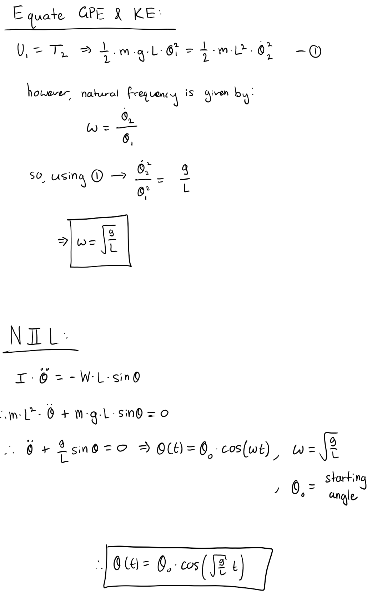

Find below an analysis of a simple pendulum using the Energy Method.
Simple Pendulum
Background
A simple pendulum is a system consisting of a mass (bob), m, connected to a fixed point, P, with a length of material, L.
The static equilibrium point is when the bob is located vertically downwards from P (i.e. when angle theta is zero)
(refer to Figure 1).

Figure 1: Simple pendulum free body diagram.
To define the motion of a simple pendulum we first make three key assumptions: the mass of the beam/wire is negligible,
the bob's diameter is approximately zero (i.e. point mass, m), and the damping of the system is negligible. To observe
a damped pendulum system, refer to the following page:
By raising the bob along the arc formed by the circle of radius L from P (i.e. increasing the magnitude of theta),
the bob gains gravitational potential energy. If the bob is then released, the gravitational potential energy (GPE) will
gradually be converted into kinetic energy (KE) as the bob accelerates due to gravity, g. When the bob reaches the static
equilibrium point again (theta = 0), it will have maximum KE and zero GPE. The bob will move past the static equilibrium
point and rise back to the same magnitude of theta where it was released from. In this location, the GPE is maximised and
the KE is zero. This pattern of energy transfer continues indefinitely as the pendulum oscillates harmonically
(refer to Figure 2).
Figure 2: Harmonic motion of a simple pendulum and the energy exchange between GPE and KE.
The animation shown in Figure 1 was created using Python and the Pygame library. Refer to the page below
to find the Python code used to create the animation.
The following will explain how the Energy Method can be used to find the equation that governs the dynamics of
the simple pendulum system. The method is implemented by equating two identical values of GPE and KE, then solving
for the desired variable. In our case, the desired variable is the angle theta. We will find the GPE (U) at its maximum
(highest point of bob) and call this point 1; then we will find the KE (T) at its maximum (lowest point of bob) and call
this point 2. By equating U1 to T2, the angle theta can be solved and hence the natural frequency of the system is found.
After this, Newton's Second Law (NIIL) can be used to find the temporal solution of the motion of the pendulum.
Then, incorporating the result from NIIL with the found natural frequency, a final temporal equation of motion can be
deduced (refer to Figure 2).

Figure 2: The final temporal equation of motion for a simple pendulum.
The working to find the result shown in Figure 2 is displayed below in Figure 3.



Figure 3: Finding the temporal solution for the motion of a simple pendulum.